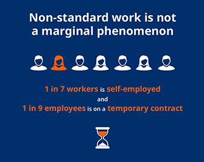
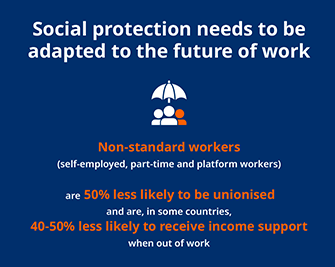
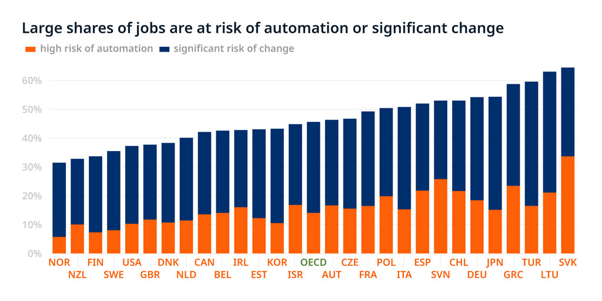

<div class="container" id="key-data-block">
	<div class="row">
		<div class="col-sm-12 col-md-10 offset-md-1">
			<div class="title"  data-i18n="[html]title-1"> Key <span class="title--highlight">data</span></div>
		</div>
	</div>
	
	<div class="row">
		<div class="col-sm-12 col-md-10 offset-md-1">
			<div class="key-data">
				<p data-i18n="[html]intro-para-1"><!-- Intro text--></p>
				<div class="title title--tertiary" data-i18n="[html]title-secondary-1">
					<!--Secondary title -->
				</div>
				<div class="key-data__special-layout">
					
					
					
					
				<!--
					
					
				-->
				</div>
				<!-- social-->
				<div class="ssk-group social" 
				data-i18n="[data-title]social-title-1"
				data-title="Read more">
					<div class="social__word" 
					data-i18n="social-verb">Share
					</div>
						<a class="ssk ssk-facebook social__item social__item&#45;&#45;facebook" href="">
							
						</a>
						<a class="ssk ssk-twitter social__item social__item--twitter" href="">
							
						</a>
						<a class="ssk ssk-linkedin social__item social__item&#45;&#45;linkedin" href="">
						
						</a>
				</div><!--/.social-->
			</div><!--/.key-data-->

			<div class="key-data">
				<div class="title title--tertiary" data-i18n="[html]title-secondary-2">
					<!--Secondary title 2 -->
				</div>
					<!-- Iframe -->
					<span data-i18n="[html]iframe-chart-1"></span>
					<!--/.Iframe-->
				<!-- Static image
					
				-->
				<p class="key-data__legend">
					<i>
						<a data-i18n="[href]legend-href;legend-verb" href="">Download</a>
					</i>
				</p>
			</div><!--/.key-data-->
		</div><!--/.col-->
	</div><!--/.row-->
</div><!--/.container-->